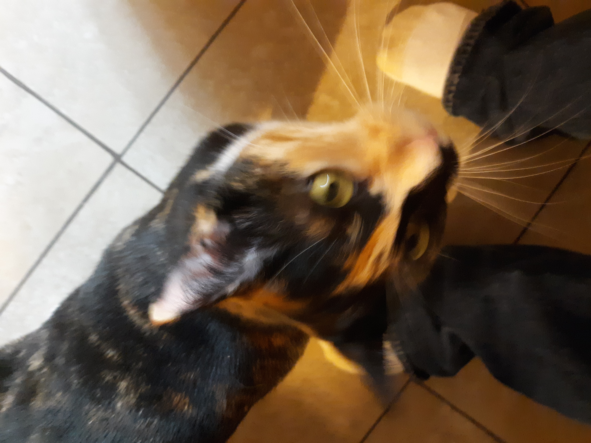

During the day Wyngz is a very active cat. She can be seen in glimpses as she runs from room to room, all the meanwhile slipping and sliding on our tile floor. Don't worry though she has it all timed perfectly as her legs every once in a while slip she makes sharp turns look easy. She also has her favorite toys, little furry mice, that she frequently chomps on and tosses in the air looking to catch them in her paws. She enjoys playing with ringing balls that make jingle sounds when pawed around.
She may sound like an extremely active cat though she is like any normal cat who loves to sleep 18 hours a day. You can find her frequently perched on the window sills getting fresh air looking out side in anticipation of spotting a bird or other out door creature. She also likes to nap near the windows catching some sun light during her sleep period.

Wyngz is like a normal cat when it comes to water, she is afraid of it. Though she may not like large amounts of water she likes to drink from the faucets and the bathtub fixture. She will use her paws to scoop up the running water for herself to lick. She has a great fascination with the little drop-lets that come out of the fixtures and is amazed when sometimes the drop-lets land on the back of her head as she explores where the previous water has gone(down the sink).
